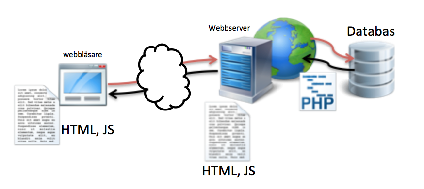

Klientbaserad webbutveckling, 1DV435
Linnéuniversitetet, Ht 2013
Programmering, JavaScript, Del 2
Förra gången
- Programmering i allmänhet
- JavaScript i synnerhet
- Variabel
- Datatyper
- Alternativ, if-satser, else-satser
- Operatorer
Klient (Webbläsare) och server

Exempel som visar förra veckans delar

Logiska operatorer
Att kunna ha mer sammansatta satser
var tal1 = 10;
var tal2 = 9;
var tal3 = 13;
if (tal1 > tal2) {
if(tal1 < tal3) {
// Kod här
}
}
// ALLA påstående måste vara sant
if (tal > tal2 && tal < tal3) {
// Kod här
}
// NÅGOT av dessa påstående måste vara sant
if (tal > tal2 || tal < tal3) {
// code here
}
Vad skrivs ut?
has_posts = true;
nr_of_posts = 15;
is_logged_in = false;
if(has_posts && nr_of_posts <= 10) {
console.log("Första");
}
if(is_logged_in || nr_of_posts > 0) {
console.log("Andra");
}
if(has_posts && 10 < nr_of_posts) {
console.log("Tredje");
}
Variabler som hör ihop
I många fall har man ett godtyckligt antal värden som hör ihop
- En talserie (lottorad, en lista med temperaturer för en månad o.s.v.)
- En lista med personers namn
- En lista med HTML-länkar
var temperatur1 = 3;
var temperatur2 = 6;
var temperatur3 = 4;
...
var temperatur30 = 18;
Dessa värden kan man spara som EN variabel i en så kallad Array
Hur funkar en array?
Om man kan se en variabel som en låda med ett värde i sig
Kan man se en array större låda med flera lådor/fack i sig

var lottorad = [4, 6, 7, 11, 17, 21, 35];
// Jämför med...
var lottonr1 = 4;
var lottonr2 = 6;
var lottonr3 = 7;
...
var lottonr7 = 35;
Array i JavaScript
var array = []; // skapa en tom array
array[0] = 13;
array[1] = 231;
array[2] = "Olle";

console.log("Första värdet i arrayen är: " +array[0]);
console.log("Sista värdet i arrayen är: " +array[2]);
Vilka värden skrivs ut?
var arr = [1, 4, -5, 10, 123];
var arr2 = [123, 10, -5, 4, 1];
// Vad skrivs ut?
console.log(arr[0]);
console.log(arr2[2]);
console.log(arr[4]);
console.log(arr2[0]);
console.log(arr[5]);
Hantera godtyckliga arrayer
Hur kan vi på ett effektivare sätt hantera alla värden i en array
oavsett hur många som finns sparade i arrayen?
// Skriv ut alla värdena i en array vars längd är 3000
// Blir jobbigt om man har många värden
console.log(arr[0]);
console.log(arr[1]);
console.log(arr[2]);
console.log(arr[3]);
...
console.log(arr[3000]);
Vi behöver göra liknande sak om och om och om igen.
Repetion - Loop
- När man vill repetera någon kod många gånger använder man någon typ av loop
- Det finns flera olika sorters loopar
for-loop, while-loop, for-in, for-each
- Vi kommer koncentrera föreläsningen på for-loopen

Om for-loopen
for (initsiering; uttryck; uppräkning/nedräkning) {
// lika många gånger som loopen körs
// körs också denna kod
}
for (var i = 0; i < 10; i++) {
// Allt som står innanför klammerparanteserna
// körs 10 ggr
// variablen i (kallas räknare) kommer att ökas med 1 för varje gång
}
Exempel på for-loop
Hantera godtyckliga arrayer
Hur kan vi på ett effektivare sätt läsa ut alla värden i en array
oavsett hur många som finns sparade i arrayen?
// Blir jobbigt om man har många värden
console.log(arr[0]);
console.log(arr[1]);
console.log(arr[2]);
console.log(arr[3]);
...
console.log(arr[3000]);
Arrayer och for-loopar passar bra ihop
Att kombinera loopar och arrayer är
en vanligt förekommande uppgift i programmering
// Antag vi har en array med godtyckligt antal värden (variabelnamnet är arr)
// Vi kan enkelt ta reda på hur många värden som finns i arrayen
var arr_length = arr.length;
for(var i = 0; i < arr_length; i++) {
console.log(arr[i]);
}
Räkna ut totalsumman av en godtycklig array
Antag det finns en array (numbers_arr) som vi inte vet längden på.
Den innehåller endast Numbers.
Räkna ut totalsumman av alla tal i arrayen
// Ta reda på längden på arrayen
var arr_length = numbers_arr.length;
// Skapa en variabel för att hålla totalsumman
// sätt den till strtvärdet noll
var total = 0;
// Kör loopen baklänges
for(var i = arr_length-1; i >= 0; i--) {
total += numbers_arr[i];
}
// Här är totalsumman färdigräknad
console.log(total);
Att strukturera upp sin kod med funktioner
- Att skriva kod i funktioner är ett sätt att strukturera mer komplexerad kod
- Med hjälp av funktioner behöver man inte skriva om samma kod flera gånger
- Inom programmering pratar man om DRY - Don´t Repeat Yourself
- En funktion kan ta emot parametrar för att styra koden innanför
- En funktion kan returnera ett värde

Exempel - funktion med parametrar
// Detta är en funktion som fått namnet add
// den tar två parametrar
function add(tal1, tal2) {
var summa = tal1 + tal2;
console.log(summa);
}
// Här kallar vi på funktionen add och fyller parametrarna med två tal
add(12, 12);
// Här kallar vi på SAMMA funktion men med ANDRA tal till parametrerna
// Detta borde ge ett annat resultat!
add(6, 6);
Returvärden
Man kan se en funktion som ett kodblock
där man stoppar in värden (parametrar)
och kan få tillbaka ett svar
function add(tal1, tal2) {
var summa = tal1 + tal2; // OBS! Scope
return summa;
}
// Här kallar vi på funktionen add och fyller parametrarna med två tal
var summa = add(4, 8);
console.log(summa); // Vad skrivs ut?
Om laborationen
- Ett mindre antal småtester ska lösas
- Koden skriver du i fördefinierade funktioner
- Gör du rätt blir det grönt
Nästa gång
Interaktivitet med HTML-sidor
 Denna presentation är licensierat under en
Creative Commons Erkännande 3.0 Unported Licens.
Denna presentation är licensierat under en
Creative Commons Erkännande 3.0 Unported Licens.